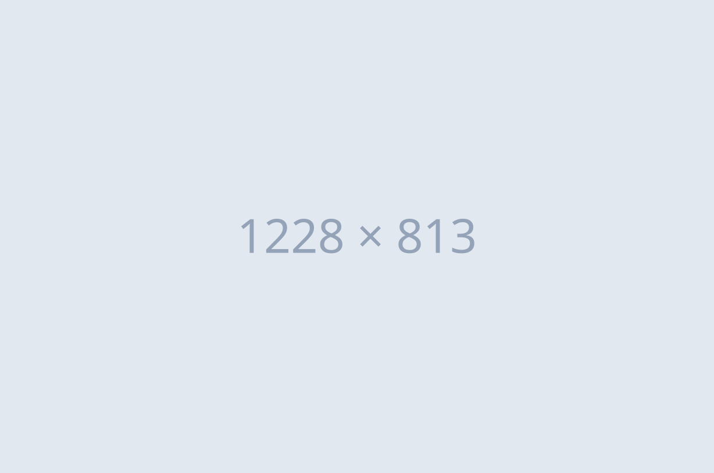
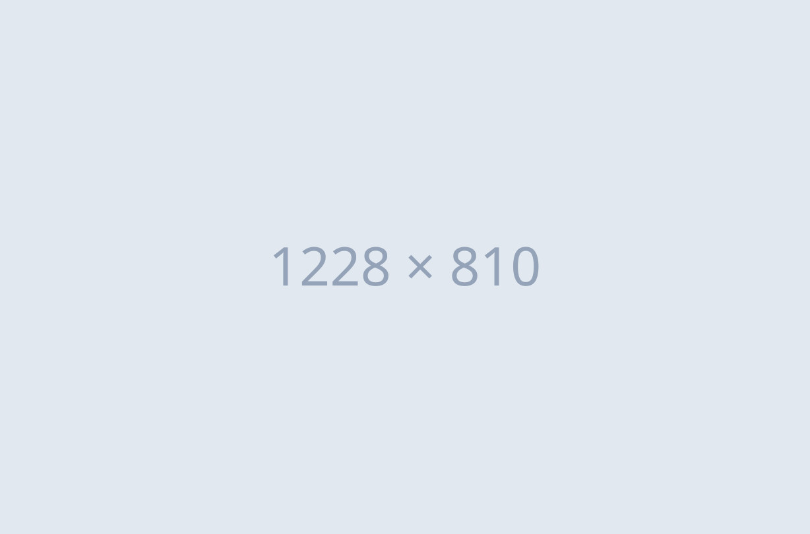
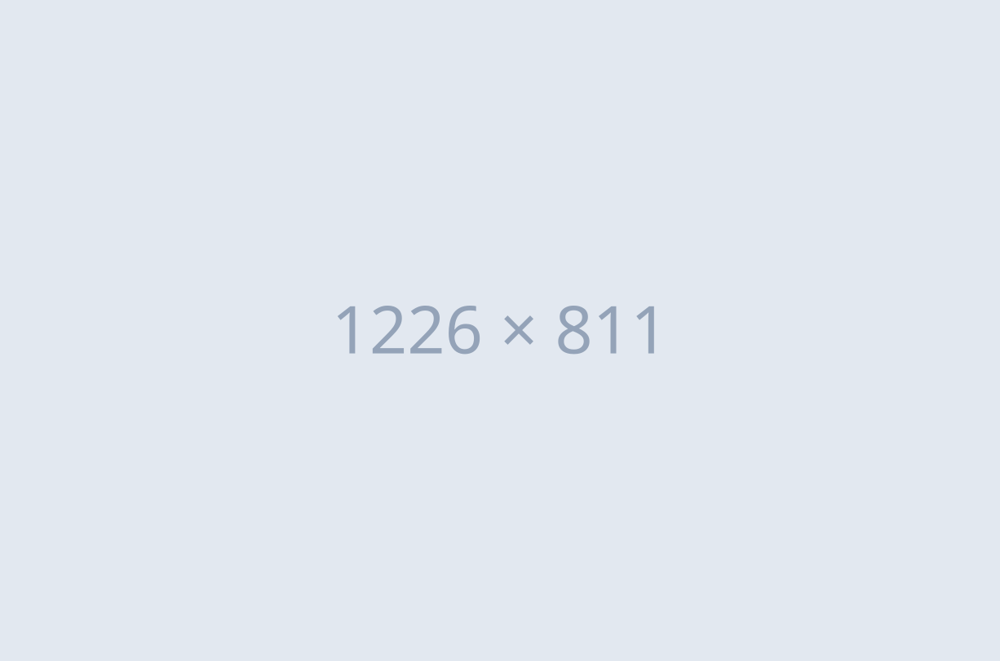

Notes From the Studios
Insights
What we learn on site, in the model shop and a year after the doors open — written by the people who drew it.


Every note.
-
 Practice · Aug 2026
Practice · Aug 2026
What 36 Years of Drawings Taught Us About Plans That Adapt
-
Technology · Jul 2026
One Model for Every Consultant on a 48-Storey Tower
-
 Infrastructure · Jun 2026
Infrastructure · Jun 2026
Building Stations in Pieces, Overnight
-

Sustainability · May 2026Designing Shade for a Hotter Century
-

Urban Design · Apr 2026Why Our Masterplans Start With the Street
-

Infrastructure · Jan 2026Lighting a Bridge Without Lighting the Sky
The Section · Monthly